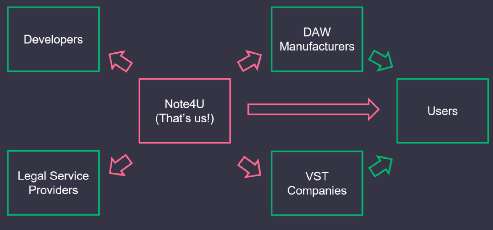
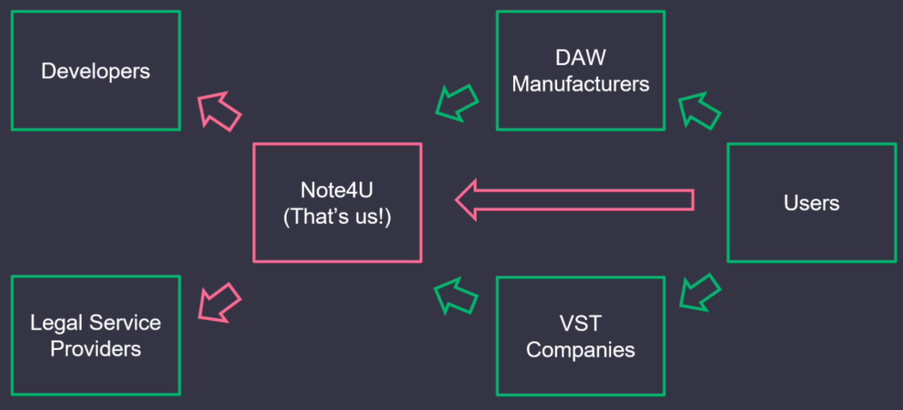
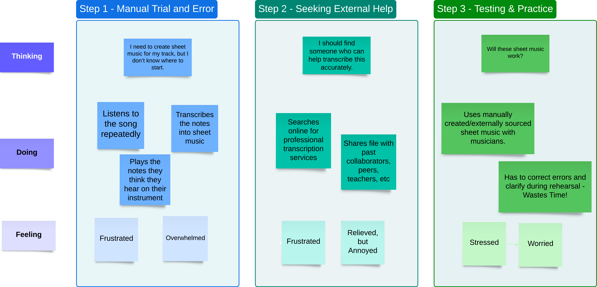
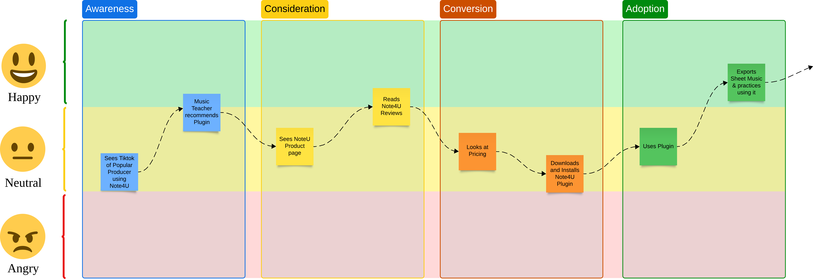

Musical Education Technology Design: Note4U
Using UX to Develop a Business
 •
•
Academic Project: JDM3619 Digital Media Distribution
•
Delivered a Business Plan and a Strategy Presentation
•
•
Academic Project: JDM3619 Digital Media Distribution
•
Delivered a Business Plan and a Strategy Presentation
Summary: Case Study explores the Note4U's product’s design, research insights, business model, and the thinking behind a potential VST implementation.
Music creation is deeply personal, yet many aspiring musicians struggle with a practical barrier: translating the music in their heads into sheet music or digital formats. In collaboration with the University of Toronto’s Faculty of Music and Faculty of Information, our interdisciplinary team sought to address this challenge. The goal was simple but ambitious: create a product that empowers students and amateur producers.
Our team explored gaps in music education and identified pain points in the workflow of translating audio ideas into usable musical notation.
Limited technical knowledge, fragmented tools, and inconsistent instruction slow down learning, frustrate creators, and limit collaboration. We wanted to build a solution that would make the creative process seamless, intuitive, and accessible.
Introducing Note4U
Note4U is a concept for a music education technology product designed to convert musical ideas into sheet music or MIDI files. The solution combines digital audio input, automated transcription, and an intuitive interface to streamline music creation.
Our Approach
Support both individual and collaborative artistic growth.
Partner with universities and schools to help students develop sustainable creative careers.
Avoid subscription-based models that may stifle creativity or impose financial burdens.
Complement, rather than compete with, existing DAWs like Ableton or Logic.
Learning from Users
We conducted a combination of secondary research and interviews with students, amateur producers, and professional musicians. The insights were revealing:
Transcription by ear is slow and error-prone for those with limited music theory knowledge.
Existing tools are often overly complex or poorly integrated with popular DAWs.
Many students lack consistent instruction in transcription, creating barriers to both learning and creativity.
Users want tools that simplify music transcription and improve workflow efficiency.
Mapping the Competitive Landscape
To understand where Note4U could fit, we studied competitors and potential partners.
Competitors
RipX & Lalal.ai
Standalone tools distributed independently, likely relying on external legal consultation.
DAWs with built-in features
Logic Pro and FL Studio offer audio-splitting tools, access is restricted to the platform.
Potential Partners
Native Instruments
Seamless VST integration, allowing one-time purchase without recurring fees.
Musescore
Reaching a broad user base, Note4U as an alternative when sheet music is unavailable.
Designing a Sustainable Business

Our business model shows the technical and legal partners on the left and how we deliver the product to users on the right. We integrate with DAW manufacturers and VST companies, while users can also purchase the software directly from our website, giving them flexibility in how they access it.
The below visualization shows the different revenue streams for Note4U and potential splits with partner companies. The pink arrow represents direct revenue from sales and payments made by Note4U, while the green arrows indicate alternative purchase paths such as VST libraries and in-DAW acquisitions that generate shared revenue with tertiary partners.
With every sale made within the VST or in-DAW version of Note4U, we predict that there will be a licensing fee that will have to be paid in order to feature in various libraries. While Kontakt does not feature a licensing fee, others may do.

What is Different this time around?
While UX research and UI design are usually part of product design, in our case we used UX/UI purely to focus on understanding our potential users to shape our business proposal. We wanted to figure out who might be interested in our product, what challenges or pain points they faced, and how we could position and market our product to them effectively.
This research was not about designing the product itself, but about identifying the right audience and understanding their needs. By mapping out user behaviors, frustrations, and preferences, we were able to make informed decisions about our target market and how to communicate the value of the VST in a way that resonates with them.
Understanding the User

Alex, the Aspiring Producer
Meet Alex,
the Aspiring Producer!
"I need accurate sheet music fast so I can rehearse without delays."
Alex is an aspiring music producer and first-year music student at U of T whose main challenges are playing instruments by ear and transcribing music, and they value plug-ins and software that are easy-to-use and supports their learning and passion. Alex needs to find a platform that can help generate accurate sheet music so that they can organize, rehearse and perform a song without any delays. They also need intuitive tools or software to assist in transcribing music so that they can focus on creative music production tasks.
Current Journey
Alex, our aspiring producer at U of T, created a song in their DAW for a course project and needed sheet music to rehearse and perform it live with other musicians. They first tried to transcribe the song by ear, but limited knowledge of notation made the process slow and frustrating. Looking for help, Alex reached out to peers, mentors, and online transcription services, eventually obtaining the sheet music but at a high cost and with added dependency on others. During rehearsals, errors in the transcription caused interruptions, leaving Alex stressed about the time and money lost in preparing for the performance.

Sales Strategy
Note4U’s adoption strategy emphasizes visibility, credibility, and educational value:
Online & Social Reach
TikTok, YouTube, and music forums target students and amateur producers.
Endorsements
Collaboration with educators, artists, and universities.
Educational Focus
Highlight learning benefits and creative support.
Conversion & Retention
Offer free trials and seamless DAW integration. Encourage organic growth.

Ideation through Figma Make
While the original project was primarily a business proposal, (as well as being completed in Fall 2024), did not include a UX prototype. However, the release of Figma Make in 2025 allowed us to visualize Note4U. (October 2025 as of writing)
Figma Make generated: Dark-mode skin (by default, but why? I never asked for a dark mode explicitly), a minimal UI skin, and a vintage/notepad-style skin. The preview shared below currently includes all three different skins.
Next Steps in Product Design and Build
If I were to move forward with designing Note4U, I would start by creating wireframes that group related features logically, making navigation feel natural. I’d then build prototypes to simulate key interactions like exporting sheet music, controlling MIDI, and processing audio. Usability testing would help me refine the layout, modular sections, and interactions, while a modular design approach would make it easier to expand and update later. Ultimately, I’d aim to deliver a polished, functional MVP that puts users’ needs at the center.
Possible Deliverables:
Design System & Components
Consistent knobs, sliders, panels, and typography.
Prototype & Interaction Map
Clickable demonstration of navigation and transitions.
Handoff Documentation
Annotated screens, assets, and UI specifications for development.